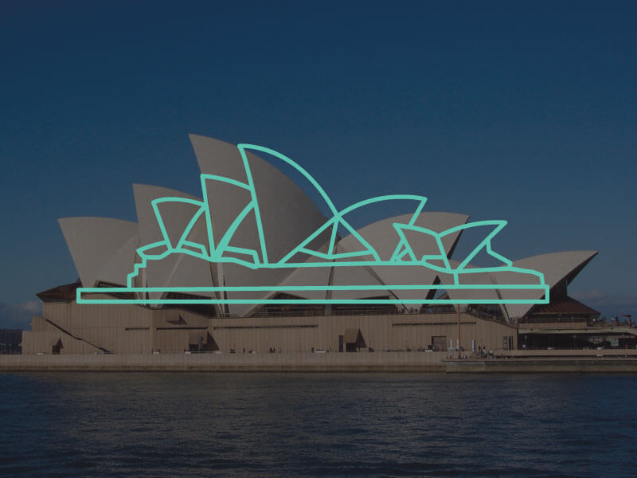

Sydney Opera House
The Sydney Opera House is a multi-venue performing arts centre in Sydney, Australia. It is one of the 20th century›s most famous and distinctive buildings. Designed by Danish architect Jørn Utzon, the building was formally opened on 20 October 1973.
The facility features a modern expressionist design, with a series of large precast concrete “shells”, each composed of sections of a sphere of 246ft 8.6in radius, forming the roofs of the structure, set on a monumental podium. The building covers 4.4 acres of land and is 600ft long and 394ft wide at its widest point. It is supported on 588 concrete piers sunk as much as 82ft below sea level.
On 28 June 2007, the Sydney Opera House became a UNESCO World Heritage Site.